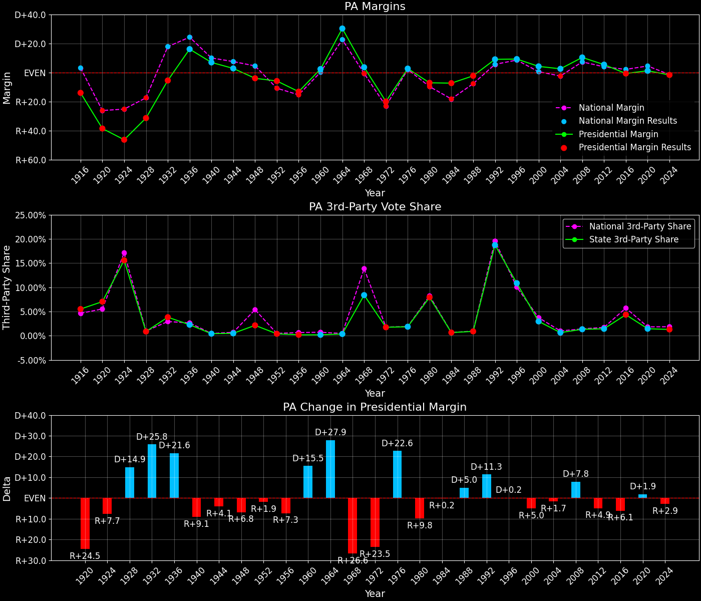
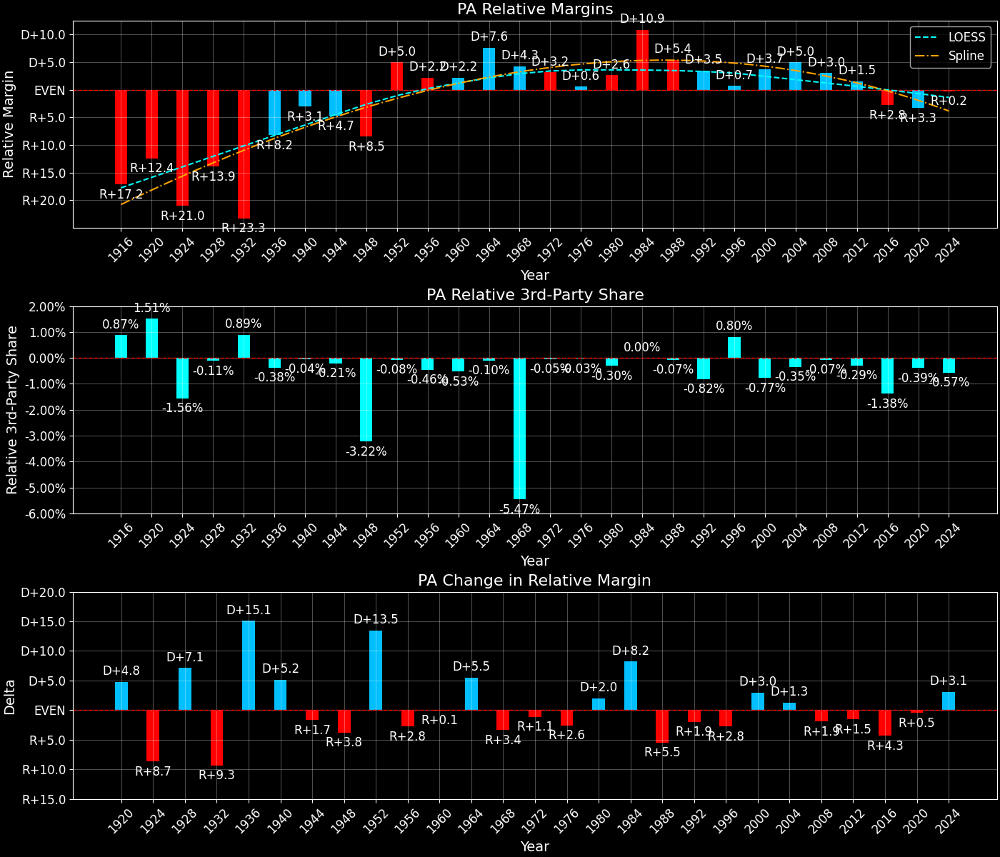
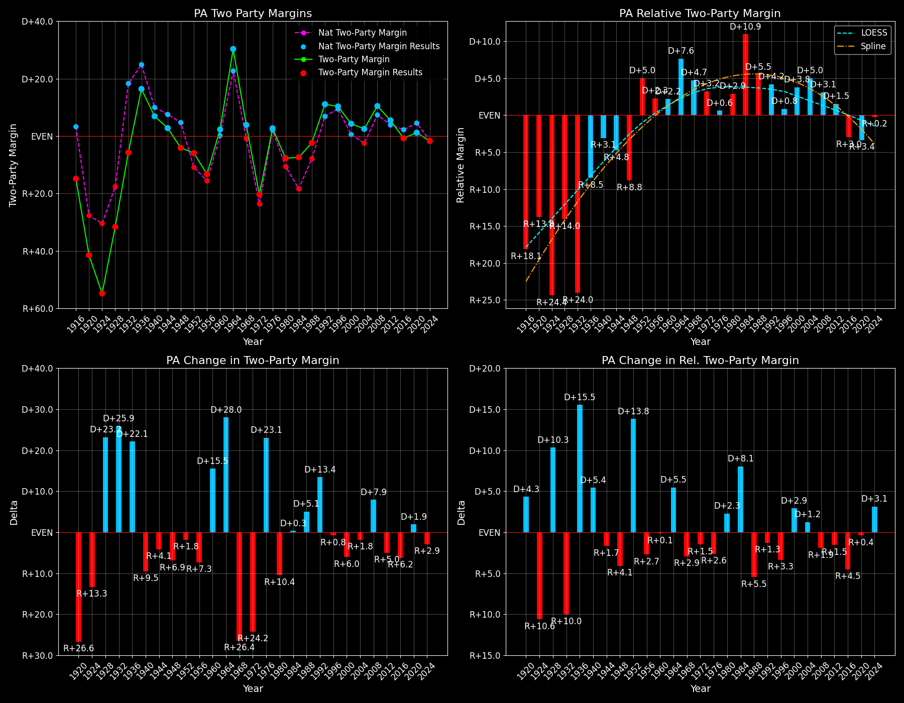

← Back to Map

Margins · 3rd-Party share · Pres. deltas

Relative margins · Relative 3rd-Party · Rel. deltas
Pennsylvania (PA) — Total Data
| Year | EVs | D | R | State Margin | Nat. Margin | Rel. Margin | Total votes |
|---|
| 1968 | 29 | 2,259,405(47.6%) | 2,090,017(44.0%) | D+3.6 | R+0.7 | D+4.3 | 4,747,928 |
| 1972 | 27 | 1,796,951(39.1%) | 2,714,521(59.1%) | R+20.0(Δ R+23.5) | R+23.1(Δ R+22.4) | D+3.2(Δ R+1.1) | 4,592,105 |
| 1976 | 27 | 2,328,677(50.4%) | 2,205,604(47.7%) | D+2.7(Δ D+22.6) | D+2.1(Δ D+25.2) | D+0.6(Δ R+2.6) | 4,620,787 |
| 1980 | 27 | 1,937,540(42.5%) | 2,261,872(49.6%) | R+7.1(Δ R+9.8) | R+9.7(Δ R+11.8) | D+2.6(Δ D+2.0) | 4,561,501 |
| 1984 | 25 | 2,228,131(46.0%) | 2,584,323(53.3%) | R+7.4(Δ R+0.2) | R+18.2(Δ R+8.5) | D+10.9(Δ D+8.2) | 4,844,903 |
| 1988 | 25 | 2,194,944(48.4%) | 2,300,087(50.7%) | R+2.3(Δ D+5.0) | R+7.7(Δ D+10.5) | D+5.4(Δ R+5.5) | 4,536,251 |
| 1992 | 23 | 2,239,164(45.1%) | 1,791,841(36.1%) | D+9.0(Δ D+11.3) | D+5.6(Δ D+13.3) | D+3.5(Δ R+1.9) | 4,959,810 |
| 1996 | 23 | 2,215,819(49.2%) | 1,801,169(40.0%) | D+9.2(Δ D+0.2) | D+8.5(Δ D+3.0) | D+0.7(Δ R+2.8) | 4,506,118 |
| 2000 | 23 | 2,485,967(50.6%) | 2,281,127(46.4%) | D+4.2(Δ R+5.0) | D+0.5(Δ R+8.0) | D+3.7(Δ D+3.0) | 4,913,119 |
| 2004 | 21 | 2,938,095(50.9%) | 2,793,847(48.4%) | D+2.5(Δ R+1.7) | R+2.5(Δ R+3.0) | D+5.0(Δ D+1.3) | 5,769,590 |
| 2008 | 21 | 3,276,363(54.5%) | 2,655,885(44.2%) | D+10.3(Δ D+7.8) | D+7.3(Δ D+9.7) | D+3.0(Δ R+1.9) | 6,013,272 |
| 2012 | 20 | 2,990,274(52.0%) | 2,680,434(46.6%) | D+5.4(Δ R+4.9) | D+3.9(Δ R+3.4) | D+1.5(Δ R+1.5) | 5,753,670 |
| 2016 | 20 | 2,926,441(47.5%) | 2,970,733(48.2%) | R+0.7(Δ R+6.1) | D+2.1(Δ R+1.8) | R+2.8(Δ R+4.3) | 6,165,478 |
| 2020 | 20 | 3,458,229(49.9%) | 3,377,674(48.7%) | D+1.2(Δ D+1.9) | D+4.5(Δ D+2.4) | R+3.3(Δ R+0.5) | 6,936,976 |
| 2024 | 19 | 3,423,042(48.5%) | 3,543,308(50.2%) | R+1.7(Δ R+2.9) | R+1.5(Δ R+5.9) | R+0.2(Δ D+3.1) | 7,058,732 |
Column explanations
- Δ
- Change (delta) in the value from the previous election year.
- Year
- Election year.
- EVs
- Number of electoral votes allocated to this state or unit.
- D
- Number of votes for the Democratic candidate (raw count(pct%)).
- R
- Number of votes for the Republican candidate (raw count(pct%)).
- State Margin
- Margin between the two major-party candidates, including third-party votes ((D - R)/total).
- Nat. Margin
- The national presidential margin for that year, including third-party votes ((D_total - R_total)/total_votes).
- Rel. Margin
- The presidential margin relative to the national presidential margin (Margin - Nat. Margin).
- Total votes
- Total voter turnout or ballots cast (when provided).
Pennsylvania (PA) — Third-Party Data
| Year | D | R | Other votes | State 3rd-Party Share | 3rd-Party Nat. Share | 3rd-Party Rel. Share |
|---|
| 1968 | 2,259,405(47.6%) | 2,090,017(44.0%) | 398,506(8.4%) | 8.39% | 13.86% | -5.47% |
| 1972 | 1,796,951(39.1%) | 2,714,521(59.1%) | 80,633(1.8%) | 1.76% | 1.80% | -0.05% |
| 1976 | 2,328,677(50.4%) | 2,205,604(47.7%) | 86,506(1.9%) | 1.87% | 1.90% | -0.03% |
| 1980 | 1,937,540(42.5%) | 2,261,872(49.6%) | 362,089(7.9%) | 7.94% | 8.24% | -0.30% |
| 1984 | 2,228,131(46.0%) | 2,584,323(53.3%) | 32,449(0.7%) | 0.67% | 0.67% | 0.00% |
| 1988 | 2,194,944(48.4%) | 2,300,087(50.7%) | 41,220(0.9%) | 0.91% | 0.98% | -0.07% |
| 1992 | 2,239,164(45.1%) | 1,791,841(36.1%) | 928,805(18.7%) | 18.73% | 19.55% | -0.82% |
| 1996 | 2,215,819(49.2%) | 1,801,169(40.0%) | 489,130(10.9%) | 10.85% | 10.05% | 0.80% |
| 2000 | 2,485,967(50.6%) | 2,281,127(46.4%) | 146,025(3.0%) | 2.97% | 3.75% | -0.77% |
| 2004 | 2,938,095(50.9%) | 2,793,847(48.4%) | 37,648(0.7%) | 0.65% | 1.00% | -0.35% |
| 2008 | 3,276,363(54.5%) | 2,655,885(44.2%) | 81,024(1.3%) | 1.35% | 1.42% | -0.07% |
| 2012 | 2,990,274(52.0%) | 2,680,434(46.6%) | 82,962(1.4%) | 1.44% | 1.73% | -0.29% |
| 2016 | 2,926,441(47.5%) | 2,970,733(48.2%) | 268,304(4.4%) | 4.35% | 5.73% | -1.38% |
| 2020 | 3,458,229(49.9%) | 3,377,674(48.7%) | 101,073(1.5%) | 1.46% | 1.84% | -0.39% |
| 2024 | 3,423,042(48.5%) | 3,543,308(50.2%) | 92,382(1.3%) | 1.31% | 1.88% | -0.57% |
Column explanations
- Year
- Election year.
- D
- Number of votes for the Democratic candidate (raw count(pct%)).
- R
- Number of votes for the Republican candidate (raw count(pct%)).
- Other votes
- Number of votes for third-party (other) candidates (raw count(pct%)).
- State 3rd-Party Share
- Share of the vote received by third-party (other) candidates.
- 3rd-Party Nat. Share
- The national third-party share for that year (3rd-Party votes / total votes).
- 3rd-Party Rel. Share
- Third-party share relative to the national third-party share (3rd-Party share - Nat. 3rd-Party share).

Two-party margins · relative · deltas
Pennsylvania (PA) — Two-Party Data
| Year | EVs | D | R | 2-Party Margin | 2-Party Nat. Margin | 2-Party Rel. Margin |
|---|
| 1968 | 29 | 2,259,405(51.9%) | 2,090,017(48.1%) | D+3.9 | R+0.8 | D+4.7 |
| 1972 | 27 | 1,796,951(39.8%) | 2,714,521(60.2%) | R+20.3(Δ R+24.2) | R+23.6(Δ R+22.8) | D+3.2(Δ R+1.5) |
| 1976 | 27 | 2,328,677(51.4%) | 2,205,604(48.6%) | D+2.7(Δ D+23.1) | D+2.1(Δ D+25.7) | D+0.6(Δ R+2.6) |
| 1980 | 27 | 1,937,540(46.1%) | 2,261,872(53.9%) | R+7.7(Δ R+10.4) | R+10.6(Δ R+12.7) | D+2.9(Δ D+2.3) |
| 1984 | 25 | 2,228,131(46.3%) | 2,584,323(53.7%) | R+7.4(Δ D+0.3) | R+18.3(Δ R+7.7) | D+10.9(Δ D+8.1) |
| 1988 | 25 | 2,194,944(48.8%) | 2,300,087(51.2%) | R+2.3(Δ D+5.1) | R+7.8(Δ D+10.5) | D+5.5(Δ R+5.5) |
| 1992 | 23 | 2,239,164(55.5%) | 1,791,841(44.5%) | D+11.1(Δ D+13.4) | D+6.9(Δ D+14.7) | D+4.2(Δ R+1.3) |
| 1996 | 23 | 2,215,819(55.2%) | 1,801,169(44.8%) | D+10.3(Δ R+0.8) | D+9.5(Δ D+2.6) | D+0.8(Δ R+3.3) |
| 2000 | 23 | 2,485,967(52.1%) | 2,281,127(47.9%) | D+4.3(Δ R+6.0) | D+0.5(Δ R+8.9) | D+3.8(Δ D+2.9) |
| 2004 | 21 | 2,938,095(51.3%) | 2,793,847(48.7%) | D+2.5(Δ R+1.8) | R+2.5(Δ R+3.0) | D+5.0(Δ D+1.2) |
| 2008 | 21 | 3,276,363(55.2%) | 2,655,885(44.8%) | D+10.5(Δ D+7.9) | D+7.4(Δ D+9.9) | D+3.1(Δ R+1.9) |
| 2012 | 20 | 2,990,274(52.7%) | 2,680,434(47.3%) | D+5.5(Δ R+5.0) | D+3.9(Δ R+3.4) | D+1.5(Δ R+1.5) |
| 2016 | 20 | 2,926,441(49.6%) | 2,970,733(50.4%) | R+0.8(Δ R+6.2) | D+2.2(Δ R+1.7) | R+3.0(Δ R+4.5) |
| 2020 | 20 | 3,458,229(50.6%) | 3,377,674(49.4%) | D+1.2(Δ D+1.9) | D+4.5(Δ D+2.3) | R+3.4(Δ R+0.4) |
| 2024 | 19 | 3,423,042(49.1%) | 3,543,308(50.9%) | R+1.7(Δ R+2.9) | R+1.5(Δ R+6.0) | R+0.2(Δ D+3.1) |
Column explanations
- Δ
- Change (delta) in the value from the previous election year.
- Year
- Election year.
- EVs
- Number of electoral votes allocated to this state or unit.
- D
- Number of votes for the Democratic candidate (raw count(pct%)).
- R
- Number of votes for the Republican candidate (raw count(pct%)).
- 2-Party Margin
- Margin between the two major-party candidates, ignoring third-party votes ((D - R)/(D + R)).
- 2-Party Nat. Margin
- The national presidential margin for that year, including third-party votes ((D_total - R_total)/total_votes).
- 2-Party Rel. Margin
- The presidential margin relative to the national presidential margin (Margin - Nat. Margin).